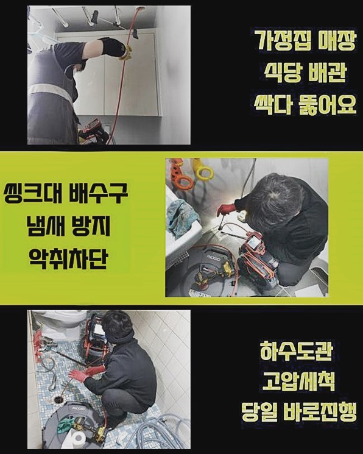
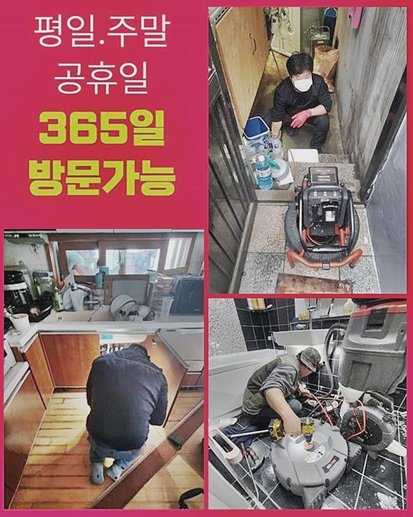
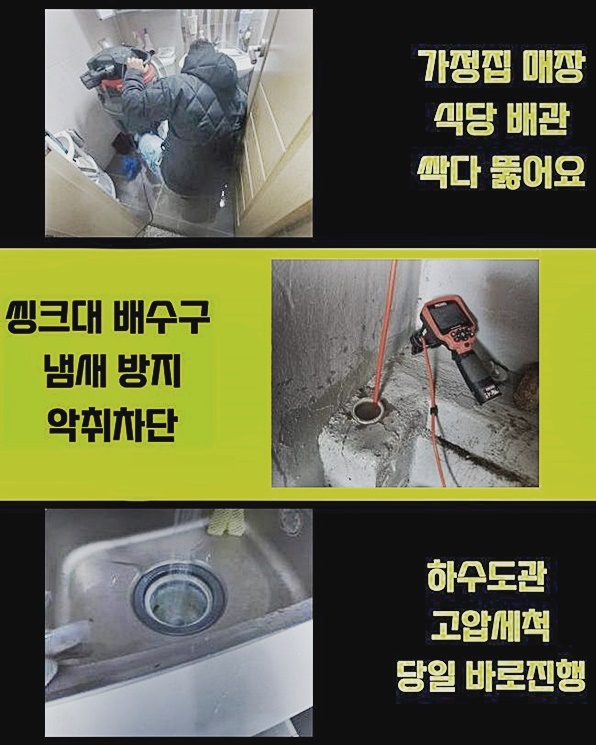
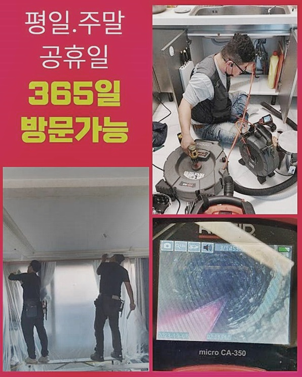
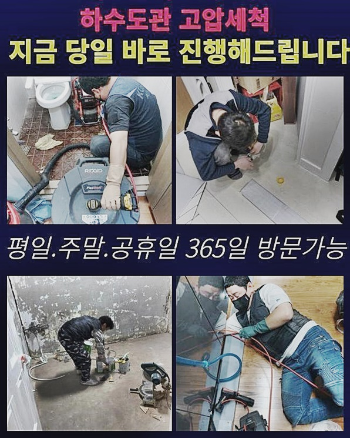
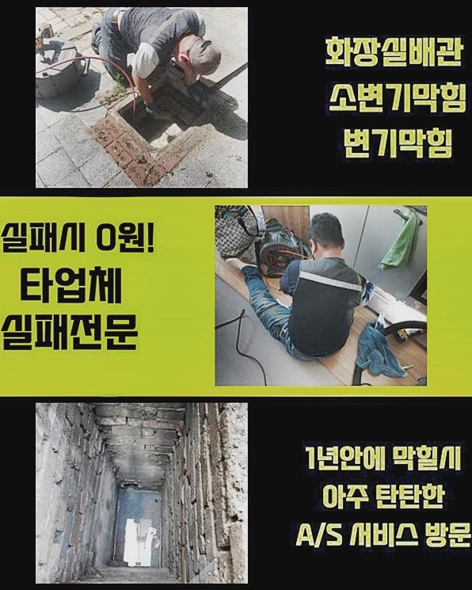
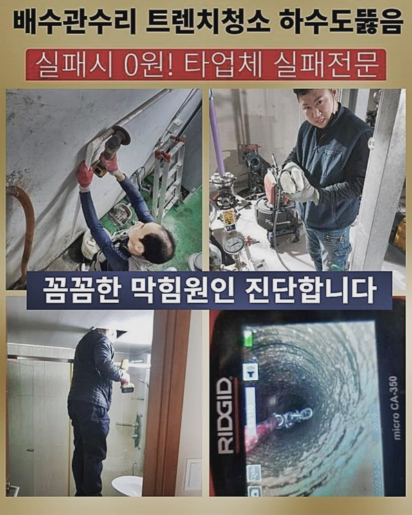

🏠 고양시 신평동오수관뚫음 벽제동 고압세척비용 배관뚫는업체
고양 하수구막힘 전문 시공 후기

📋 작업 개요
- 위치: 고양
- 서비스 유형: 하수구막힘, 배관막힘, 뚫는업체, 배관청소, 고압세척, 악취차단
- 작업 일시: 2024. 7. 15. 12:04
- 업체명: 하수구수사대 (010-5615-2118)
🔍 문제 상황
고양시 신평동오수관뚫음 벽제동 고압세척비용 배관뚫는업체
욕실은 보통 사람들이 실내에서도 특히나 가장 많은 물의 양을 이용하는 장소입니다
가볍게만 보더라도 바닥의 그레이팅 시설 개수대와 같이 수돗물이 나오는 구조물이 다량 있다는 것을 숙지할 수 있는데요!
그렇기에 물소비가 많은 욕실 내측에서는 하수구가 차단되는 현상이 피치 못하게 피어나게 되는 구조인 것입니다
어느 날 갑자기 하수의 폐기가 이뤄지지 않았는데 나아질 기미가 없어서 저희를 찾아주셨죠
주소지에 방문을 드려서 바로 현황 분석부터 검사를 시행해 봤더니 뿌연 하수가 배관으로 전혀 나갈 낌새가 없이 가득 차오른 상황이었죠
세수를 할 때마다 배출이 느릿해 지는 듯한 변화를 감지했는데 극단적으로 고장나서 쌓인 상태까지는 얼마 전에 시작된 증세라고 알려주셨어요
세면대라는 시설물은 불필요한 각질 층이나 모발과 같은 노폐물이 유입되어 차단될 가능성이 다분해요
화장실 시설물을 활용하는 게 전혀 허락되지 않은 상황이라 얼른 막힌 사안을 개선하기 위한 단계에 진입하게 됐습니다
청소용 기기를 먼저 접촉시키는 게 아니라 배관 자체의 현상들을 낱낱이 파헤치면서 처리 방향을 설립합니다
오늘의 특이점은 세면대 배관이 벽의 내부로 깔려있는 상태로 보였습니다

🔎 원인 분석
💡 전문가 진단: 정밀 진단 장비를 사용하여 슬러지의 고착 여부를 판명하고 타격/세척 작업을 실시했습니다.
눈으로 감별되는 부분에는 배수관이 뚜렷하게 인식되지는 않았기에 상황에 따라 굴착이나 다소 규모가 큰 작업이 개입되어야 할 때가 있다는 점을 공지해 드렸습니다
건축 연식별로 배관 혹은 기타 설비의 세부사항은 특색이 각기 달라요!
건축일이 오래되지 않은 신축현장에 내방드려 보면 배수로들이 마감재 안으로 숨겨진 채 신설되었는데 이는 악취 제어에도 도움이 되며 더불어 외형적으로도 미니멀하게 다듬는 겁니다
구조적 결함의 정체를 검출해 내기 위해서는 배수관 트랩을 해체를 시킨 이후에 심도있게 봐야 합니다
이번에 고쳐드린 장소는 건축물이 완공된 지 매우 예전인 정도로 노후되지는 않았으므로 배관라인 컨디션이 딱히 부식되지는 않은 상태였죠
이 건축물이 세워진지가 까마득한 수준이라면 세면대 시설물들이 다 낡아버려서 지속적인 마찰이 가해지면 마개가 파손되거나 붕괴되기도 합니다
그리고 배관이 막혀버린 현상이 오래 존속하면 연계된 부품과 배관이 비정상적으로 작동하는 일로 진척되는 일도 흔합니다
내부 오염원에 따라서 예외가 생길 수는 있어도 음식물의 잔여량으로 차단된 상황이라면 폐기되지 못하고 고인 채로 삭아갈 것이기 때문에 퀴퀴한 냄새까지 나타납니다!
이 문제도 별도로 처리해야 하며 배관 자체의 형태에 따라서 부작용이 초래될 때가 많으니 섬세한 디테일까지 신경쓰며 관측을 통해 완전히 파악해야 탈이 없어요
구조의 특성을 판단해 보니 냄새유입을 막는 p트랩으로 달려있는 상황이었는데 하나의 가구 안에서 수습이 불가하다 싶으면 바로 아래층에 말씀을 드리고 천장탈거 후 접근하는 게 필수조건일 때가 있습니다
웬만하면 한 세대 안쪽에서 전적으로 매듭을 지을 수 있도록 열성을 다할 것이며 처한 상태를 보기위해 배관용 내시경을 투입하여 정보를 파악해야 하죠!

🔧 작업 과정
배수구 마개를 꺼내보니 상당량의 오염 인자들이 빈 공간없이 메우고 있었네요
수돗물을 이용하면서 분리된 각질 조각과 비누덩어리같은 것들이 조금씩 누적되어가며 결국 여백없이 채워진 거였죠
수동팝업 위에 찌꺼기가 가득한 모습이면 새로운 걸로 새것으로 바꾼다거나 자체적인 청결관리만 해도 사태가 개선됩니다
세면기의 수도물이 원활하게 빠지지 못하는 상황은 세면대팝업의 하단부에서 폐쇄되었거나 혹은 수도관로까지 장애요소가 끼인 경우로 분류가 됩니다
심층부에 이르기까지 장애 인자가 자리잡은 모습이 관찰되었기에 깊숙한 곳까지의 세정이 필수조건이다 싶더라고요
밑집으로 이동하여 천장쪽 활로를 개척할 필요성이 없을 듯 했고 위에서 아래로 내려가면서 위생관리만 해주어도 가뿐하게 봉쇄된 측면이 개선되겠다는 추정되었습니다
세부적으로 들어가 봐야 확정할 수 있지만 초기단계에서 관찰로 얻은 정보로는 고객님의 댁 안에서 통수가 구현될 것 같았습니다
알아낸 결론은 즉각적으로 고객님께도 자세히 알려드린답니다
세부적인 배관청소 기기로 하수구의 장애를 야기하는 불순물들을 소거시켜야 합니다
적체된 찌꺼기의 층이 과다하다 판단됐기에 충분하게 반복업무에 들어가야 했어요
현장의 속성에 따라 소요되는 기간은 소폭 변화하는 게 일반적입니다
다량의 오염원이 집적되어 결정화되었거나 양이 과다하다고 판단되면 투입되는 시간이 한층 길어질 수도 있어요
파이프 속에 내장된 오염물질을 점진적으로 정화작업을 거치다보면 정화가 이루어집니다
긁어내는 스케일링기와 배관 속 탐지기는 슬림한 파이프로 구성되어 있기 때문에 동시에 들어가서 실시간 중개를 하며 디테일링 청소가 가능합니다
어느정도 잔량이 있는지 끊임없이 관찰하면서 작업을 수행할 수 있기에 답답하게 중단된 측면을 말끔하고 상쾌하게 탈바꿈시킬 수 있습니다
통행불능의 상태를 초래했던 잔뜩 오염되어 있던 문제요소가 없어졌습니다
내측에 이제는 가로막는 물질들이 종적을 감췄기에 느릿하게 빠지던 물도 명쾌하게 개통이 됩니다
최종 확인을 위하여 수돗물을 폐기해 보면서 별다른 하자는 없는지 빈틈없이 살펴보면서 완수를 알리고 있으며 향후 재발하는 막힘 문제가 감지될 때에도 후속작업까지도 책임지고 수행해 드리겠습니다!


✅ 작업 완료
세면대의 근방에 때가 많이 껴 있고 산화한 곳이 많았기에 말끔히 처리해 드리고서 위생적으로 마무리해요
현장마다 투입되는 작업의 내용에 변동이 있으니 저희 업체는 미리 시공 금액을 제시하기는 어렵습니다
고객님 댁으로 찾아뵙고 관측기를 넣어서 최선의 방향성이 무엇일지 틀을 형성한 뒤에 세부적인 가격을 지정할 수 있습니다
추가적인 의문이 남아 있다면 방문드린 이후에도 얼마든지 물어보세요
업계 경험이 많은 베티랑이 세부적 과정에 대한 설명을 설명을 추가해 드리며 작업 중에 설비 심각한 손상부가 있거나 담당한 배관 이외의 이슈가 감지될 때에도에도 곧장 대처를 해드리니 그저 내맡겨주시기를 바랍니다




⚠️ 하수구 배관 막힘 예방 및 관리 가이드
- ✅ 머리카락, 비닐, 물티슈 등 물에 분해되지 않는 이물질은 하수구 유입을 절대 금지해 주세요.
- ✅ 하수구 거름망을 씌우고 모여진 이물질은 주기적으로 쓰레기통에 바로 비워주셔야 합니다.
- ✅ 배관 노후가 심할 경우 이물질이 더 쉽게 걸리므로 주기적인 배관 세척(고압세척 등)을 권장합니다.
- ✅ 작업 후 1년 이내 재발 시 하수구수사대에서 무상 A/S 보증 서비스를 제공합니다.
💡 핵심 정리
- 확실한 장비 작업(내시경 점검 및 샤프트 스케일링)으로 원인을 뿌리 뽑습니다.
- 작업 후 1년 이내에 동일한 부위 재발 시 100% 무상 A/S 서비스를 보장합니다.
- 서울 · 경기 · 인천 전 지역에 24시간 언제든 긴급 출동할 수 있도록 항시 대기 중입니다.
❓ 자주 묻는 질문 (FAQ)
🚨 고양 하수구막힘 문제로 고민이신가요?
정확한 원인 진단과 확실한 시공으로 재발 없는 해결을 약속드립니다.
24시간 긴급 출동 | 서울 · 경기 · 인천 전지역 | 1년 내 재발 시 무상 A/S